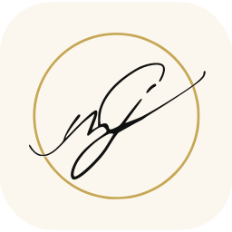

Jesus Mar Couto
Widget de avisos
- Instale a app gratuita Scriptable.
Abrir na App Store - Copie o widget.
Copiado ✓ - Abra o Scriptable, toque em ＋, cole (toque no ecrã → Colar) e dê-lhe o nome JMC Avisos (no título, em cima). Toque em Done.
- Toque no script JMC Avisos: inicie sessão com a conta da clínica e escolha de quem é o telemóvel. É só uma vez.
- No ecrã principal, mantenha o dedo num espaço vazio → Editar → Adicionar widget → Scriptable → tamanho médio. Toque no widget → Script: JMC Avisos.
Ecrã bloqueado: mantenha o dedo no ecrã bloqueado → Personalizar → widgets → Scriptable.
O widget atualiza-se sozinho quando houver versões novas. Tocar nele abre os avisos.